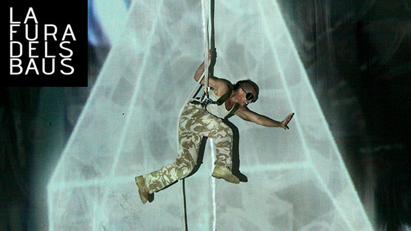
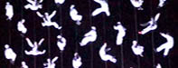
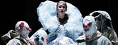
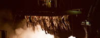

|  | ||
La fura dels Baus"TEMPTACIONS" |
||
El espectáculo ‘Temptacions’ sigue su gira española en las ciudades de Elche y Toledo |
Gran Teatro de Elche |
|
| OTROS ESPECTÁCULOS | ||
| 
LA NOVENA SINFONÍA |

BENVENUTO CELLINI |

JOURNEY BEYOND TIME |